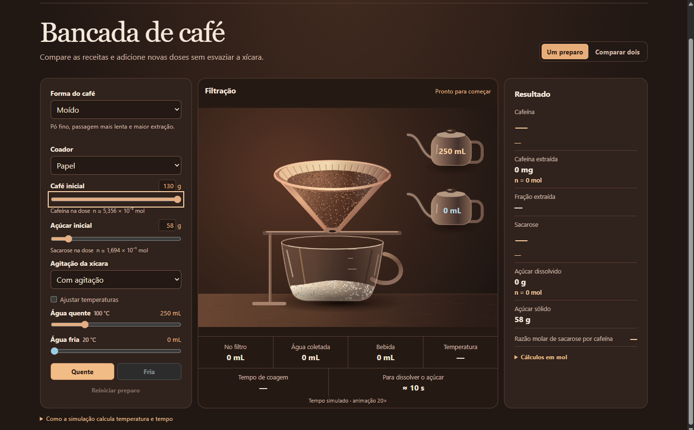

Café Lab
Prepare dois cafés lado a lado e varie a moagem, o coador e a temperatura da água. Observe a extração de cafeína e a dissolução do açúcar, acompanhe o efeito da diluição na concentração e use a titulação para estimar a concentração de ácido em uma amostra.
Abrir laboratório
Habilidades da BNCC
6º ano
- EF06CI01 — Comparar o açúcar totalmente dissolvido com a mistura em que sobra açúcar no fundo da xícara.
- EF06CI03 — Explicar por que o filtro retém o pó e deixa a bebida passar durante o preparo.
- EM13CNT101 — Explicar por que adicionar água reduz a concentração sem alterar a quantidade de soluto já dissolvido.
- EM13CNT301 — Testar como as quantidades de ingredientes e a temperatura afetam a concentração e a solubilidade. Acompanhar o pH durante a titulação.
- EM13CNT302 — Comunicar os resultados da diluição ou da titulação usando os cálculos e as medidas da simulação.
- EM13MAT314 — Resolver problemas de preparo e diluição usando a concentração molar como razão entre a quantidade de soluto e o volume da solução.